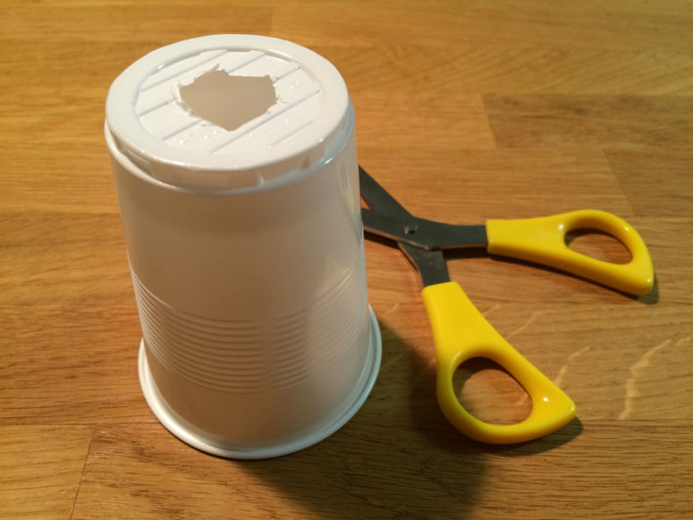
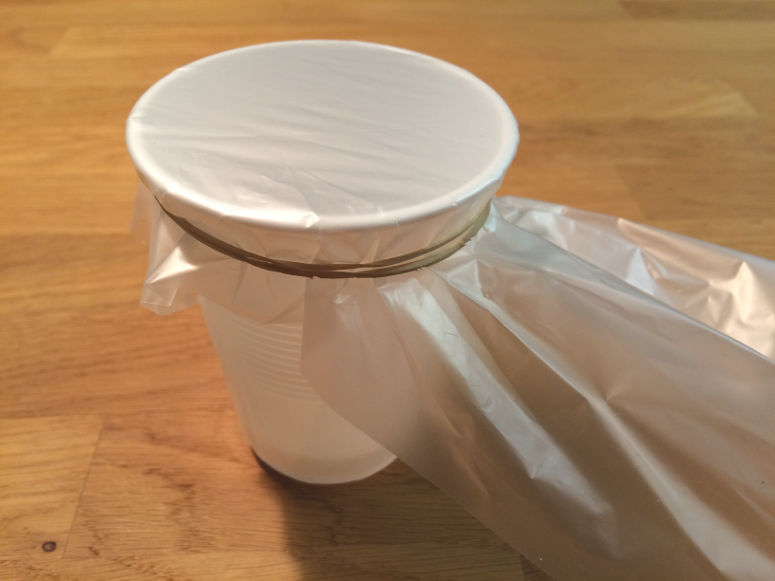
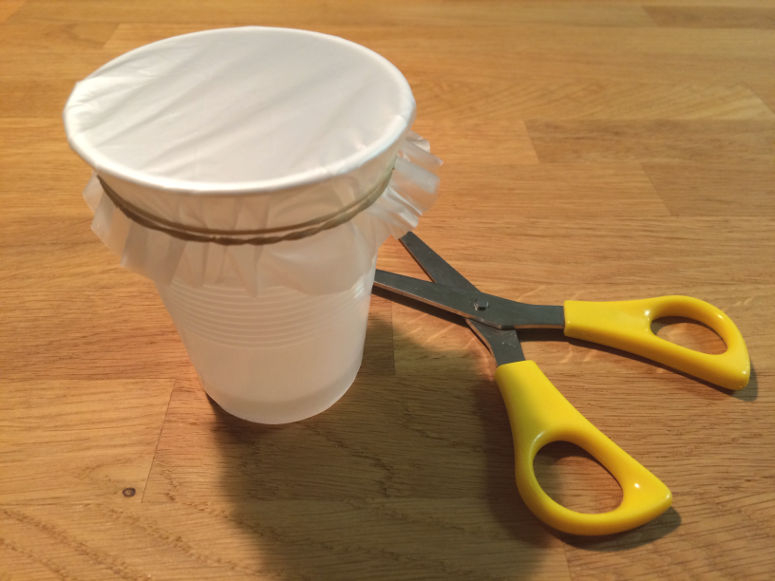
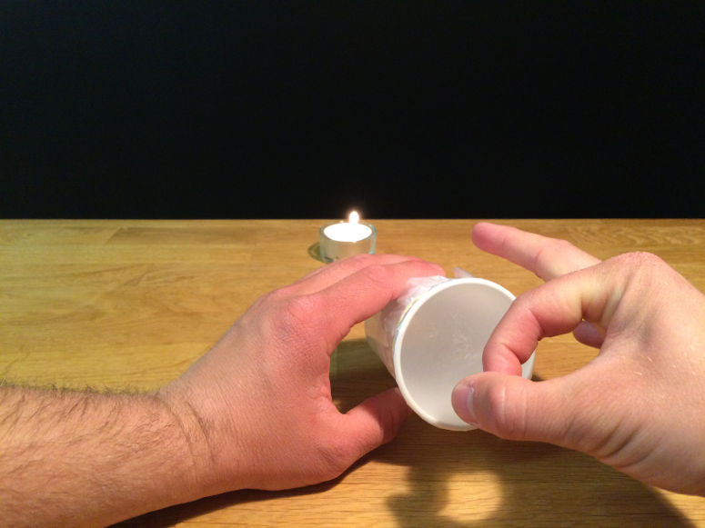

Весёлые и простые научные эксперименты для детей и взрослых.
Воздушная пушка

Физика
Самая дешевая в мире Airzooka. Это эксперимент по стрельбе воздухом.
| Нравится: | Поделиться: | |
Видео

Материалы
- 1 пластиковый или бумажный стакан
- 1 пара ножниц
- 1 пластиковый пакет
- 1 резинка
- 1 свеча
- 1 коробок спичек или зажигалка
Внимание!
В этом опыте используется огонь. Держите огнетушитель под рукой.Шаг 1


Шаг 2

Шаг 3

Шаг 4

Краткое объяснение
Когда вы хлопаете по пакету, вы запускаете цепную реакцию столкновений воздушных частиц — "воздушный пучок", который движется вперед. Свеча гаснет, потому что поток воздуха сдувает пламя.Подробное объяснение
Воздух состоит в основном из молекул азота и кислорода, а также из некоторого количества молекул воды, атомов аргона, молекул углекислого газа и других. Все эти частицы мы можем назвать воздушными частицами, потому что в данном контексте они ведут себя одинаково.Когда вы хлопаете по пакету, вы толкаете воздушные частицы с другой стороны пакета. Они летят вперед и, в свою очередь, толкают молекулы воздуха перед собой, и так далее. Эта цепная реакция продолжается к отверстию в дне стакана, где сила от толкающих частиц воздуха концентрируется на меньшем количестве частиц, которые затем приобретают большую скорость. И затем цепная реакция продолжается уже вне стакана.
Как воздушный пучок может пройти так далеко, не рассеявшись в остальном воздухе? Пучок удерживается вместе благодаря принципу Бернулли. Этот принцип гласит, что чем быстрее движется воздух, тем меньше он давит на окружающее пространство. И наоборот — неподвижный воздух давит сильнее всего. В этом опыте воздушный пучок быстро движется вперед, а окружающий воздух неподвижен. Это значит, что неподвижный воздух как бы "обнимает" пучок, не давая ему рассеяться.
На самом деле воздушный пучок — это не круглый шарик воздуха. Он больше похож на диск.
Почему гаснет свеча? В свече горит воск (или другой материал), который испарился. Тепло от горящего воска плавит, испаряет и затем поджигает новый воск, и так поддерживается пламя. Но поток воздуха уносит горящие пары воска от свечи и мешает нагреву нового воска.
Эксперимент
Вы можете превратить эту демонстрацию в эксперимент. Так она станет отличным научным проектом. Для этого попробуйте ответить на один из следующих вопросов. Ответ на вопрос будет вашей гипотезой. Затем проверьте гипотезу, проведя эксперимент.- Что произойдет, если сделать отверстие больше?
- Что произойдет, если сделать отверстие меньше?
- Что произойдет, если использовать более короткий и широкий стакан?
- Что произойдет, если склеить два стакана в один длинный цилиндр?
Вариация
Воздушные пушки можно делать из чего угодно. Если хотите сделать большую, используйте, например, банку из-под краски и большой пластиковый пакет.| Нравится: | Поделиться: | |
Похожие


Содержание сайта
© Архив Экспериментов. Весёлые и простые научные эксперименты для детей и взрослых. По биологии, химии, физике, наукам о Земле, астрономии, технологиям, огню, воздуху и воде. Для детского сада, школы, дома и научных ярмарок. Также есть руководство для учителя.
Наверх
© Архив Экспериментов. Весёлые и простые научные эксперименты для детей и взрослых. По биологии, химии, физике, наукам о Земле, астрономии, технологиям, огню, воздуху и воде. Для детского сада, школы, дома и научных ярмарок. Также есть руководство для учителя.
Наверх
Архив Экспериментов от Людвига Велландера. Весёлые и простые научные эксперименты для школы и дома. Биология, химия, физика, науки о Земле, астрономия, технологии, огонь, воздух и вода. Фото и видео.